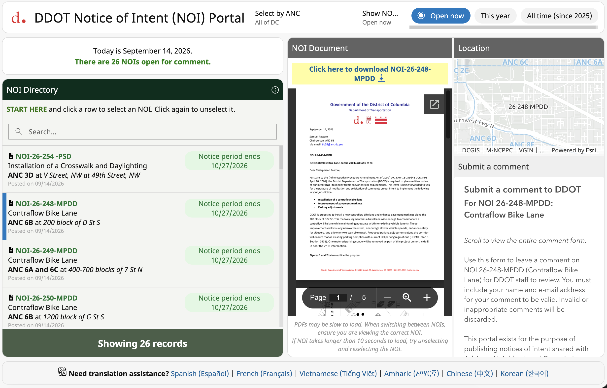

Week 02 | SEPTEMBER 14, 2026
Public interest technology is here to stay.
Reading: McGuinness & Schank, Power to the Public

Web portal for submitting notice of intent for the District of Columbia, I created this portal. Located at noi.ddot.dc.gov
In the digital age, we are constantly surrounded by technology that makes our lives better. Our food is grown,
processed, marketed, and delivered more efficiently. We worry less about serious illness. And we can stay connected
with family miles away. Yet these technologies, while making the public better off, are not necessarily “civic” or in
the “public interest”. They are often motivated by profit in addition to the service or benefit they provide. At its core,
public interest technology, according to McGuinness and Schank, is the adoption of modern technology standards in
pursuit of the public interest, particularly within government. This is embodied in the “design, data, delivery”
framework proposed in Power to the Public. Drawing on principles from private-sector technology practices, public
interest technology argues that government is able to provide services just as effectively. I agree, and believe
that governments willing to embrace this approach can make meaningful change, a process that may become easier with
AI’s rapid adoption across sectors.
Excellent, resident-focused government service is a core principle of public interest technology, and one I
experienced firsthand at the District Department of Transportation. My work did sometimes intersect with the
broader “civic tech” world – for example, through engaged citizens writing about traffic cameras or
bus shelters in heat-exposed locations.
But my day-to-day, I served on an Innovation & Performance division using data and technology to solve
problems across the agency. In keeping with McGuinness and Schank’s definition, my role was rarely to implement a
predetermined product. Instead, I took a user-focused approach to understand the problem, determine the best
solution – technological or otherwise – iterate on designs, and support final delivery.s
Our solutions were often technological, but just as frequently, a low-tech intervention could solve a problem as well
or better. I believe these efforts still constituted public interest technology: we carefully defined problems,
assembled the best data available, and delivered solutions intended to improve the public experience. Not all software
is public interest, and not all public interest technology is software-based. The technology is ultimately a means to
an end: better, more responsive government.
Public interest technology will continue to evolve, although governments can be notoriously slow to adopt
technological change because of historical records, disjointed systems and policies, underfunded technology teams, or
limited political will. Two developments may help alleviate these obstacles. First, the growing visibility of
proactive government teams, such as New York City’s Public Interest Technology Team, demonstrates that investing
public resources in better government can be both possible and celebrated. Positive examples may encourage other
jurisdictions to make similar investments. Second, AI tools and agentic services are increasingly enabling governments – and residents – to accomplish work that was
previously difficult or impossible with limited resources. Tasks such as crosswalking databases, designing
interdepartmental data architectures, or developing resident-facing web products can increasingly be supported by AI.
At minimum, AI can help government staff identify and implement better practices.
Governments are uniquely positioned to benefit from AI because they possess the data, regulatory authority, and direct
relationships with the people they serve. The public sector has long been a recipient of technological change from the
outside. With the growth of public interest technology and AI, governments now have an opportunity to embrace
technological change from within and use data and technology more effectively for public good.
Week 04 | SEPTEMBER 28, 2026
Boston City & Massachusetts State: State of ADUs
Between Massachusetts as a whole and the city of Boston, Boston is much more restrictive on ADU development than the rest of Massachusetts is allowed to be. In fact, where the state of Boston moves to prevent certain limitations from being a factor (e.g. disallowing a parking minimum for transit-accessible locations or not allowing an owner-occupancy requirement), Boston makes no such conditions and remains quite prescriptive in what it allows to be built. The State of Massachusetts, via the Affordable Homes Act, makes provisions for internal, attached, and detached ADU types by right. Boston has only made one type permissible by right: the internal ADU, which amounts to a change in use of the existing structure, without changing the square footage. Whereas the State of Boston has opened a wide door for ADU policy, allowing smaller municipalities to make small adjustments, Boston has created a narrow opening for specific ADU types in specific areas. For example, the Mattapan neighborhood is currently the only area allowed to create attached or detached ADUs by right. Boston is planning to copy this ADU policy to a few other select neighborhoods, however the application is still quite limited in scale, compared to the whole of Boston. A homeowner would need to understand their own parcel, how to get the information relevant to their jurisdiction, and to process the zoning & ADU codes to understand what they would be able to do with their property.
Part of the challenge towards ADU production is the legibility of the product and being able to navigate the legal & governmental system to build it. The “ADU” is mostly a legal concept created by the government – in a legal environment that defines housing and residential use quite rigidly and prescriptively, the “ADU” had to be invented for it to exist. In another world, one could simply build an extension to their house, or construct structure in their backyard. As such, understanding one’s ability to create an ADU requires a sufficient understanding of the law, or at least the zoning code, itself. These are typically dense, opaque, and aimed to set a legal boundary, not a roadmap for the resident. Understanding one’s options, and gaining the confidence and resources to achieve them is a major challenge and opportunity for the resident. Another issue that a homeowner may face is compliance with other zoning codes. Often, when major construction occurs on a property, certain features may need to be brought “up to code” if they are being altered. Knowing that many aspects of existing properties are out of code, this may serve as a deterrent for people looking to do construction on their property – if this is has a major effect, the government should consider changing their ADU policy, or offering pathways to waive certain zoning requirements. Boston begins to lay out the ADU process (from research, plan, permit, to building, and moving in) however, this process is still complicated and involves many actors from government agencies to construction companies.
One potential tool to develop could be a property assessment tool for the city (and resident) which would help evaluate properties in violation of the zoning regulations. In older regions, such as Boston, this kind of analysis would be instrumental in understanding what choices residents are actually facing when they choose to touch or alter their properties. This knowledge can help equip city planners, and residents, with the extent of the zoning challenges, and may encourage additional solutions to restrictive zoning regulations (whether through changes to the zoning code or through exceptions). Codifying the zoning logic, as it relates to geometric & spatial features, would make this kind of analysis possible. Another tool could be more resident-focused, dealing with options for ADUs on their parcel, as well as a financial calculator for estimating the cost of construction and an estimated pay-off if the unit is rented, or if the property value increased.
The ideal product would be able to reference any parcel in a given jurisdiction, so this requires an expansive dataset of GIS data. The minimum requirements would be parcel shapes, existing property/structure outlines (for primary and secondary structures), street shapefiles, zoning code & overlays (and a digitized logic of this), and then a web interface for the resident/city employee. This product would need to be QA/QC’ed for data quality and on-the-ground accuracy; disclaimers should be made about the models true accuracy. Additional information or estimates should be available regarding construction costs, financing options, local developers/ADU development companies, and rental income estimates.
There have been a lot of updates to ADU eligibility and feasibility through the municipal code; Boston and Massachusetts have both been making some efforts to publicize and demystify this option, however it is difficult for the layperson to understand their ADU options, and develop a roadmap to constructing one. In the same vein, homeowners may struggle to understand their options for updating, altering, or remodeling their homes in compliance with zoning regulations. I suggest a tool that can understand a parcel & property’s compliance, based on current zoning regulations. This tool has a use for both the city employee, who can understand compliance both at a parcel- and region-level, and for the homeowner, who can move forward with property changes with more confidence. This requires a digitization of both the physical information (property, footprint, parcel, environment) and the legal/zoning environment. At the end, this will help clarify opportunities for people to feel more empowered in their own homes.